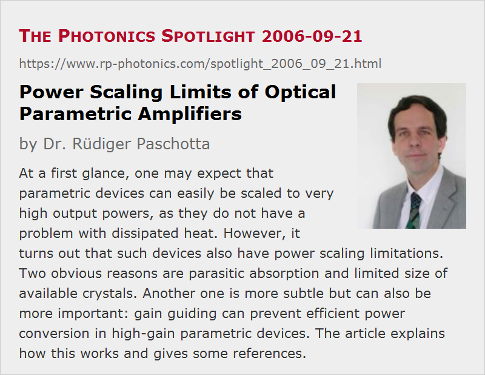

Power Scaling Limits of Optical Parametric Amplifiers
Posted on 2006-09-21 as a part of the Photonics Spotlight (available as e-mail newsletter!)
Permanent link: https://www.rp-photonics.com/spotlight_2006_09_21.html
Author: Dr. Rüdiger Paschotta, RP Photonics Consulting GmbH
Abstract: At a first glance, one may expect that parametric devices can easily be scaled to very high output powers, as they do not have a problem with dissipated heat. However, it turns out that such devices also have power scaling limitations. Two obvious reasons are parasitic absorption and limited size of available crystals. Another one is more subtle but can also be more important: gain guiding can prevent efficient power conversion in high-gain parametric devices. The article explains how this works and gives some references.

Ref.: G. Arisholm et al., “Limits to the power scalability of high-gain optical parametric oscillators and amplifiers”, JOSA B 21 (3), 578 (2004); encyclopedia articles on gain guiding, nonlinear frequency conversion, power scaling of lasers
Most laser architectures are not truly power-scalable, because increasing powers lead to more and more detrimental thermal effects, e.g. thermal lensing with strong optical aberrations, affecting the beam quality and possibly also the conversion efficiency. Realizing that parametric devices such as optical parametric amplifiers or optical parametric generators do in principle not have to dissipate any energy in the amplifying element (a nonlinear crystal), one might expect that at least this category of active devices should allow for easy power scaling. The envisaged scaling law is rather simple: for doubling the output power, just double the mode areas in the crystal, so that the optical intensities remain unchanged, and we won't run into damage problems.
A first problem encountered here is that of parasitic absorption in nonlinear crystals. Although the dissipated power in a nonlinear device is usually small compared to that in a laser amplifier, thermal effects can be significant, because phase matching is a delicate issue: sometimes, temperature differences of well below one Kelvin are enough to significantly disturb the phase matching and thus degrade the conversion efficiency and/or the beam quality.
Another practical limitation may arise from the aperture of available nonlinear crystals. However, some materials such as KDP are available in very large sizes, and in most cases the crystal size is not limiting the achievable power.
A more fundamental and rather involved issue is that of gain guiding. In a high-gain parametric amplifier operated with Gaussian beams, gain guiding can be so strong that the beam radius of the amplified signal becomes rather small toward the end of the crystal – with little impact of changes in the input signal beam profile. This leads to problems just in that last section, where significant power conversion occurs. If the signal beam becomes significantly smaller than the pump beam, and if it becomes just strong enough to well deplete the pump beam in its center, a lot of pump power in the outer regions remains unconverted. If one tries to more strongly saturate the amplifier (e.g. with a stronger signal input), the beam quality breaks down.
This problem is actually not severe for relatively low-power devices, operating with tightly focused beams. This is because diffraction prevents gain guiding from having a strong effect. However, if one tries to scale up the power by scaling up the mode areas, diffraction loses its influence, and the detrimental effect of gain guiding becomes very strong. Interestingly, the resulting power scaling limits are less tight for crystals with a relatively low nonlinearity, which are operated with more tightly focused beams. So a crystal material with high nonlinearity is not necessarily most suitable for highest powers.
Note that these power scaling limits apply only to high-gain devices. This means that the problem may be solved by splitting an amplifier device into two stages: a high-gain preamplifier with moderate pump depletion (and moderate power efficiency) and a relatively low-gain power amplifier with a moderate gain of only a few decibels. Another possibility is to operate the nonlinear device with top-hat beams rather than with Gaussian beams.
This article is a posting of the Photonics Spotlight, authored by Dr. Rüdiger Paschotta. You may link to this page and cite it, because its location is permanent. See also the RP Photonics Encyclopedia.
Note that you can also receive the articles in the form of a newsletter or with an RSS feed.
Questions and Comments from Users
Here you can submit questions and comments. As far as they get accepted by the author, they will appear above this paragraph together with the author’s answer. The author will decide on acceptance based on certain criteria. Essentially, the issue must be of sufficiently broad interest.
Please do not enter personal data here; we would otherwise delete it soon. (See also our privacy declaration.) If you wish to receive personal feedback or consultancy from the author, please contact him e.g. via e-mail.
By submitting the information, you give your consent to the potential publication of your inputs on our website according to our rules. (If you later retract your consent, we will delete those inputs.) As your inputs are first reviewed by the author, they may be published with some delay.
|  |
If you like this page, please share the link with your friends and colleagues, e.g. via social media:
These sharing buttons are implemented in a privacy-friendly way!